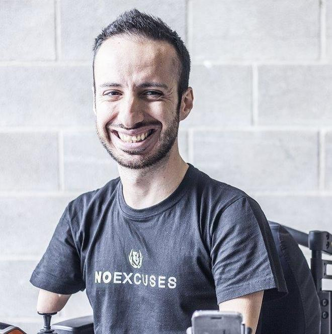

Des joueurs en situation de handicap reconnus à l'international
Sven Van de Wege
Sven Van de Wege est un joueur néerlandais qui a perdu la vue dans son enfance. Aujourd'hui, il joue à Street Fighter en se basant sur les sons du jeu et a déjà réalisé des compétitions. Le voir jouer est impressionnant : enchaînant les mouvements et les attaques, il laisse paraître une parfaite maîtrise du jeu, comme s'il le voyait. Il a récemment atteint le rang Super Diamant en classé, un des 5 plus hauts rangs du jeu.
MacsHG
Massimiliano Sechi, dit MacsHG, est un joueur italien qui a fait entendre parler de lui dans le monde. Touché par une malformation des membres depuis sa naissance, il n'a ni bras ni jambes, et se déplace en fauteuil roulant. Il est passionné par les jeux vidéo depuis l'âge de 4 ans, lorsqu'il a reçu en cadeau son premier ordinateur. Il jouait de plus en plus, développant sa configuration personnelle afin d'utiliser la souris et le clavier. C'est aujourd'hui un joueur professionnel reconnu, devenant le premier joueur handicapé à atteindre le niveau Diamant dans le jeu League of Legends. Il est également l'un des champions d'Europe et du monde de Diablo 2 et 3. Il fonde un mouvement appelé #NOEXCUSES, son objectif est de montrer au monde qu'aucun de nous n'a de limite insurmontable. Un beau message d'espoir et de courage pour tous.
